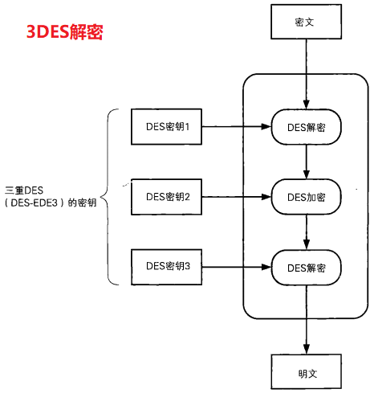
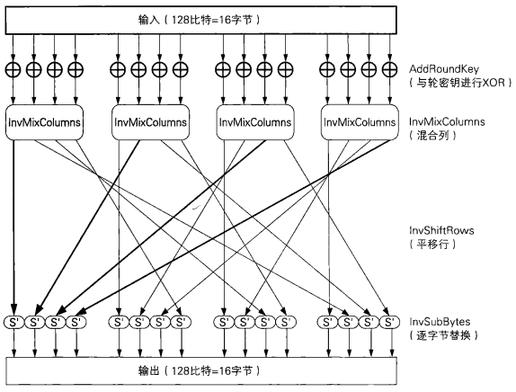

2.1 编码
现代的密码都是建立在计算机的基础之上的，这是因为现代的密码所处理的数据量非常大，而且密码算法也非常复杂，不借助计算机的力量就无法完成加密和解密的操作。
计算机的操作对象并不是文字，而是由0和1排列而成的比特序列。无论是文字、图像、声音、视频还是程序，在计算机中都是用比特序列来表示的。执行加密操作的程序，就是将表示明文的比特序列转换为表示密文的比特序列。
将现实世界中的东西映射为比特序列的操作称为编码（encoding）。例如midnight（深夜）这个词，我们可以对其中的每个字母逐一进行编码，这种编码规则叫作ASCII。

注意这里的m –> 01101101这一转换并不是加密而是编码。尽管在人类看来0和1的序列跟密码没什么两样，但计算机却可以“看懂”这些比特序列，并很快地反应出其所对应的字符 midnight
2.2 DES
2.2.1 什么是DES
DES（Data Encryption Standard）是1977年美国联邦信息处理标准（FIPS）中所采用的一种对称密码（FIPS46.3）。DES一直以来被美国以及其他国家的政府和银行等广泛使用。然而，随着计算机的进步，现在DES已经能够被暴力破解，强度大不如前了。
RSA公司举办过破泽DES密钥的比赛（DESChallenge），我们可以看一看RSA公司官方公布的比赛结果：
- 1997年的DES Challenge1中用了96天破译密钥
- 1998年的DES ChallengeIl-I中用了41天破译密钥
- 1998年的DES ChallengeII-2中用了56小时破译密钥
- 1999年的DES ChallengeIll中只用了22小时15分钟破译密钥
由于DES的密文可以在短时间内被破译，因此除了用它来解密以前的密文以外，现在我们不应该再使用DES了。
2.2.2 加密和解密
DES是一种将64比特的明文加密成64比特的密文的对称密码算法，它的密钥长度是56比特。尽管从规格上来说，DES的密钥长度是64比特，但由于每隔7比特会设置一个用于错误检查的比特，因此实质上其密钥长度是56比特。
DES是以64比特的明文（比特序列）为一个单位来进行加密的，这个64比特的单位称为分组。一般来说，以分组为单位进行处理的密码算法称为分组密码（blockcipher），DES就是分组密码的一种。
DES每次只能加密64比特的数据，如果要加密的明文比较长，就需要对DES加密进行迭代（反复），而迭代的具体方式就称为模式（mode）。
DES的加密与解密 - 图例

2.3 三重DES
现在DES已经可以在现实的时间内被暴力破解，因此我们需要一种用来替代DES的分组密码，三重DES就是出于这个目的被开发出来的。
三重DES（triple-DES）是为了增加DES的强度，将DES重复3次所得到的一种密码算法，通常缩写为3DES。
2.3.1 三重DES的加密
三重DES的加解密机制如图所示：


明文经过三次DES处理才能变成最后的密文，由于DES密钥的长度实质上是56比特，因此三重DES的密钥长度就是56×3=168比特, 加上用于错误检测的标志位8x3, 共192bit。
从上图我们可以发现，三重DES并不是进行三次DES加密（加密–>加密–>加密），而是加密–>解密–>加密的过程。在加密算法中加人解密操作让人感觉很不可思议，实际上这个方法是IBM公司设计出来的，目的是为了让三重DES能够兼容普通的DES。
当三重DES中所有的密钥都相同时，三重DES也就等同于普通的DES了。这是因为在前两步加密–>解密之后，得到的就是最初的明文。因此，以前用DES加密的密文，就可以通过这种方式用三重DES来进行解密。也就是说，三重DES对DES具备向下兼容性。
如果密钥1和密钥3使用相同的密钥，而密钥2使用不同的密钥（也就是只使用两个DES密钥），这种三重DES就称为DES-EDE2。EDE表示的是加密（Encryption) –>解密（Decryption)–>加密（Encryption）这个流程。
密钥1、密钥2、密钥3全部使用不同的比特序列的三重DES称为DES-EDE3。
尽管三重DES目前还被银行等机构使用，但其处理速度不高，而且在安全性方面也逐渐显现出了一些问题。
2.4 AES
AES（Advanced Encryption Standard）是取代其前任标准（DES）而成为新标准的一种对称密码算法。全世界的企业和密码学家提交了多个对称密码算法作为AES的候选，最终在2000年从这些候选算法中选出了一种名为Rijndael的对称密码算法，并将其确定为了AES。
Rijndael是由比利时密码学家Joan Daemen和Vincent Rijmen设汁的分组密码算法，今后会有越来越多的密码软件支持这种算法。
Rijndael的分组长度为128比特，密钥长度可以以32比特为单位在128比特到256比特的范围内进行选择（不过在AES的规格中，密钥长度只有128、192和256比特三种）。
2.4.2 AES的加密和解密
和DES—样，AES算法也是由多个轮所构成的，下图展示了每一轮的大致计算步骤。DES使用Feistel网络作为其基本结构，而AES没有使用Feistel网络，而是使用了SPN Rijndael的输人分组为128比特，也就是16字节。首先，需要逐个字节地对16字节的输入数据进行SubBytes处理。所谓SubBytes,就是以每个字节的值（0～255中的任意值）为索引，从一张拥有256个值的替换表（S-Box）中查找出对应值的处理，也是说，将一个1字节的值替换成另一个1字节的值。
SubBytes之后需要进行ShiftRows处理，即将SubBytes的输出以字节为单位进行打乱处理。从下图的线我们可以看出，这种打乱处理是有规律的。
ShiftRows之后需要进行MixCo1umns处理，即对一个4字节的值进行比特运算，将其变为另外一个4字节值。
最后，需要将MixColumns的输出与轮密钥进行XOR，即进行AddRoundKey处理。到这里，AES的一轮就结東了。实际上，在AES中需要重复进行10 ~ 14轮计算。
通过上面的结构我们可以发现输入的所有比特在一轮中都会被加密。和每一轮都只加密一半输人的比特的Feistel网络相比，这种方式的优势在于加密所需要的轮数更少。此外，这种方式还有一个优势，即SubBytes，ShiftRows和MixColumns可以分别按字节、行和列为单位进行并行计算。

SubBytes – 字节代换
ShiftRows – 行移位代换
MixColumns – 列混淆
AddRoundKey – 轮密钥加
下图展示了AES中一轮的解密过程。从图中我们可以看出，SubBytes、ShiftRows、MixColumns分别存在反向运算InvSubBytes、InvShiftRows、InvMixColumns，这是因为AES不像Feistel网络一样能够用同一种结构实现加密和解密。

InvSubBytes – 逆字节替代
InvShiftRows – 逆行移位
InvMixColumns – 逆列混淆
2.5 应选择哪种对称加密
前面我们介绍了DES、三重DES和AES等对称密码，那么我们到底应该使用哪一种对称密码算法呢？
- 今后最好不要将DES用于新的用途，因为随着计算机技术的进步，现在用暴力破解法已经能够在现实的时间内完成对DES的破译。但是，在某些情况下也需要保持与旧版本软件的兼容性。
- 出于兼容性的因素三重DES在今后还会使用一段时间，但会逐渐被AES所取代。
- 今后大家应该使用的算法是AES（Rijndael），因为它安全、快速，而且能够在各种平台上工作。此外，由于全世界的密码学家都在对AES进行不断的验证，因此即便万一发现它有什么缺陷，也会立刻告知全世界并修复这些缺陷。
一般来说，我们不应该使用任何自制的密码算法，而是应该使用AES。因为AES在其选定过程中，经过了全世界密码学家所进行的高品质的验证工作，而对于自制的密码算法则很难进行这样的验证。
本章小结
本章中我们介绍了对称密码，以及DES、三重DES、AES和其他一些密码算法。
使用一种密钥空间巨大，且在算法上没有弱点的对称密码，就可以通过密文来确保明文的机密性。巨大的密钥空间能够抵御暴力破解，算法上没有弱点可以抵御其他类型的攻击。
然而，用对称密码进行通信时，还会出现密钥的配送问题，即如何将密钥安全地发送给接收者。为了解决密钥配送问题，我们需要非对称加密技术
本章所介绍的几乎所有的密码算法，都只能将一个固定长度的分组进行加密当需要加密的明文长度超过分组长度时，就需要对密码算法进行迭代下一章我们将探讨对分组密码进行迭代的方法。